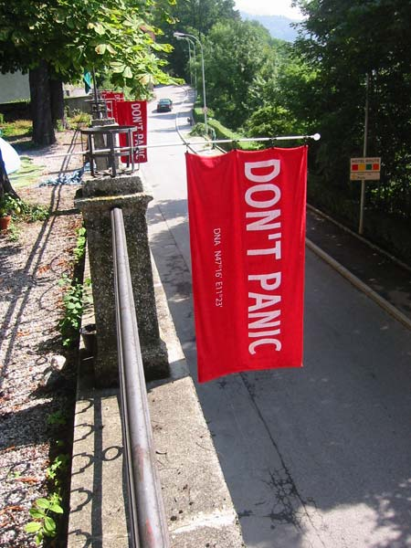

About 42
As anyone who has read Douglas Adams Hitchhiker's Guide to the Galaxy series of books will tell you, 42 is The Answer to Life, the Universe and Everything, which was calculated by the second greatest computer in all of time and space, named Deep Thought, taking a mere seven and a half million years to do so. Unfortunately the great philosophers who constructed Deep Thought neglected to make it able to determine what the question is!
So another supercomputer was constructed, this one containing some organic elements and with system operators that look surprisingly similar to white mice. After 10 million years, just as the new computer is about to produce The Question, the computer (aka the Earth) is destroyed by a race of intergalactic highway construction workers known as the Vogons.
A wxPython user once took the opportunity to express to me his glee at discovering wxPython and all the potential it enabled him to have in his projects, and said,
"wxPython is kind of like 42. I'm not quite sure what the question is yet, but I feel much better and more able to tackle any problem since I already know what the answer is!"
So I thought that this would be a good theme for this Blog to have. It's been quite a while since I read the the five books of the H2G2 trilogy so I don't have a lot of obscure references or quotes floating around at the top of my mind to slip into my writing, but I'll try to give you one once in a while.
So, welcome to my blog. Do you know where your towel is?

So long, and thanks for reading!
See also: 42 Quotes